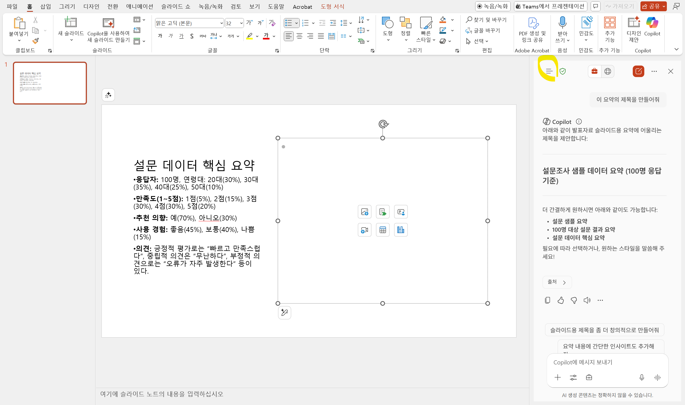
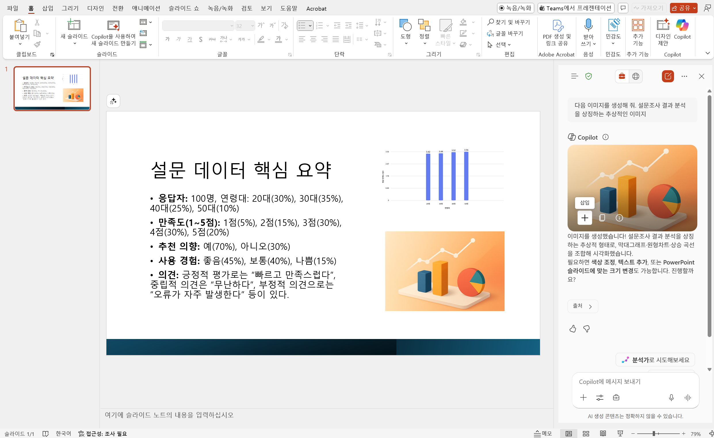

이제 Word, Excel, PowerPoint에서 Copilot Chat을 자유롭게 활용하고, 대화 히스토리를 확인하며 업무 효율을 극대화하는 방법을 체험하세요.
단순한 문서 작성을 넘어, 오피스 전반에서 Copilot과 함께하는 스마트 워크플로우를 경험할 시간입니다.
Copilot Chat을 오피스 전반에서 연결해 쓰면 얼마나 강력한지 대화 맥락을 이어가는 스마트 워크플로우를 직접 경험하세요.
1️⃣ 첫번째 단계, 필요한 파일 다운로드
- 다음의 링크로 이동하여 에서 PowerPoint 템플릿 파일을 다운로드 합니다.
- 아래의 가이드를 확인하고 순서대로 진행합니다.
2️⃣ 두번째 단계, 샘플 데이터 만들기
- 이번 스테이지의 첫 번째 퀘스트는 샘플 데이터를 만드는 것입니다. 이후 진행할 분석과 시각화를 위해 설문조사 결과 데이터가 필요합니다. Copilot을 활용해 100개의 결과를 가진 샘플 데이터를 자동으로 생성해보세요!
- Copilot Chat을 실행합니다.
- 아래 프롬프트를 참고하여, 나만의 프롬프트로 샘플 파일을 생성합니다.
- 출력된 엑셀파일을 다운로드 합니다.
🚩 [샘플 프롬프트]
[주제입력]에 대한 100개의 설문조사 결과를 가진 샘플 데이터를 만들어 주세요.
컬럼은 다음을 포함합니다:
(예시)
- 응답자ID (숫자)
- 연령대 (20대, 30대, 40대, 50대)
- 만족도 (1~5점)
- 추천 의향 (예/아니오)
- 사용 경험 (좋음, 보통, 나쁨)
- 의견 (간단한 텍스트)
결과는 표 형식으로 작성하고, .xlsx로 저장할 수 있도록 출력해 주세요.
컬럼은 다음을 포함합니다:
(예시)
- 응답자ID (숫자)
- 연령대 (20대, 30대, 40대, 50대)
- 만족도 (1~5점)
- 추천 의향 (예/아니오)
- 사용 경험 (좋음, 보통, 나쁨)
- 의견 (간단한 텍스트)
결과는 표 형식으로 작성하고, .xlsx로 저장할 수 있도록 출력해 주세요.
3️⃣ 세번째 단계, 엑셀 데이터 시각화
- 엑셀에서 생성한 샘플 파일을 엽니다.
-
코파일럿 아이콘을 선택하여 코파일럿 패널을 엽니다.

- 설문조사 결과에서 인사이트를 확인하고 시각화를 실행합니다.
🚩 [샘플 프롬프트]
이 엑셀 파일의 데이터를 분석해 주세요.
- 주요 통계(평균, 최대, 최소, 분포)를 요약하고,
- 연령대별 만족도와 추천 의향의 상관관계를 설명해 주세요.
결과는 간단한 bullet 포인트로 정리해 주세요.
- 주요 통계(평균, 최대, 최소, 분포)를 요약하고,
- 연령대별 만족도와 추천 의향의 상관관계를 설명해 주세요.
결과는 간단한 bullet 포인트로 정리해 주세요.
이 데이터에서 의미 있는 패턴을 찾아 주세요.
- 어떤 연령대가 만족도가 가장 높나요?
- 추천 의향과 사용 경험 간의 관계를 분석해 주세요.
- 어떤 연령대가 만족도가 가장 높나요?
- 추천 의향과 사용 경험 간의 관계를 분석해 주세요.
이 데이터를 기반으로 시각화를 만들어 주세요.
- 연령대별 만족도 평균을 막대그래프로 표현
- 추천 의향(예/아니오) 비율을 파이차트로 표현
- 만족도와 사용 경험의 관계를 산점도로 표현
- 연령대별 만족도 평균을 막대그래프로 표현
- 추천 의향(예/아니오) 비율을 파이차트로 표현
- 만족도와 사용 경험의 관계를 산점도로 표현
4️⃣ 네번째 단계, 파워포인트 슬라이드 컨텐츠 넣기
- 다운받은 템플릿 파일을 파워포인트에서 엽니다.
-
코파일럿 아이콘을 선택하여 코파일럿 패널을 열고 왼쪽 상단의 메뉴를 선택하여 Chat 히스토리 목록을 확인합니다.
 - 히스토리 목록에서 샘플데이터 생성했던 프롬프트를 선택하여 추가 질의를 진행합니다.
- 답변을 복사하여 슬라이드에 붙여넣어 슬라이드를 완성합니다.
- 히스토리 목록에서 엑셀에서 수행했던 프롬프트를 선택합니다.
-
시각화 했던 그래프를 찾아 복사하여 슬라이드에 붙여넣어 슬라이드를 완성합니다.

- 이 슬라이드에 어울리는 이미지를 생성합니다. new chat을 선택하여 새로운 대화를 시작합니다.
-
이미지 생성을 요청하고, 생성된 이미지를 슬라이드에 추가합니다.

🚩 [샘플 프롬프트]
이 데이터의 인사이트를 3개의 글머리기호로 요약합니다. 발표 슬라이드에 포함할 수 있도록 간결하게 작성합니다.
이 요약을 포함하는 슬라이드의 제목을 제안해 주세요.
🚩 [샘플 프롬프트]
다음 이미지를 생성해 줘. [이미지 요청 내용]
5️⃣ 다섯번째 단계, 파워포인트 파일 제출하기
이렇게 만들어진 파워포인트 파일을 아래의 링크를 통해 제출해 주세요.
파일명은 "alias_stage4.pptx"로 저장하여 업로드 해주세요.